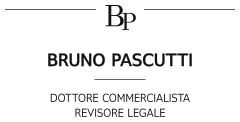

Contabilità e bilanci
Contabilità ordinaria e semplificata, bilanci d’esercizio, tenuta dei libri e dei registri contabili.
Studio professionale · Udine
Assistenza a imprese, professionisti e privati. Un rapporto diretto con il professionista, dalla gestione ordinaria alle operazioni societarie.
Le competenze
Dagli adempimenti contabili e fiscali alla consulenza per le decisioni d’impresa.
Contabilità ordinaria e semplificata, bilanci d’esercizio, tenuta dei libri e dei registri contabili.
Redditi, 730, IVA, sostituti d’imposta, IMU e locazioni. Assistenza nei rapporti con l’Agenzia delle Entrate.
Costituzioni, cessioni di quote, trasformazioni e riorganizzazioni. Operazioni straordinarie e passaggi generazionali.
Incarichi di revisore legale e di sindaco in società di capitali, con attenzione alla qualità dell’informazione societaria.
Analisi di bilancio, indici e lettura dell’andamento economico e finanziario a supporto delle decisioni aziendali.
Pareri, avvisi bonari, controlli e verifiche, autotutela e accertamento con adesione. Assistenza nel precontenzioso.

Lo studio
Un’attività professionale fondata sul rapporto diretto con il cliente e sulla conoscenza della sua realtà.
Il percorso professionale inizia nel 1995 presso lo Studio Parmegiani e Pascutti, attivo a Udine dal 1974, di cui il dott. Pascutti diventa poi associato, seguendo la pianificazione strategica e fiscale della quasi totalità dei clienti.
Dal 2018 prosegue l’attività in autonomia, all’interno di una struttura multidisciplinare, con particolare attenzione al controllo di gestione. Oggi segue personalmente imprese, professionisti e privati negli aspetti strategici, contabili, fiscali e societari.
Lo studio ha sede in Piazza della Repubblica 3 a Udine, presso MPRD & Partners. Questa collocazione permette, quando una pratica lo richiede, il confronto con professionisti di consolidata esperienza in ambito societario, tributario e legale.
L’incarico resta affidato al dott. Pascutti: l’eventuale coinvolgimento di altri professionisti viene concordato prima con il cliente.
Area clienti
L’area dedicata ai documenti, alle comunicazioni e alle informazioni utili nei rapporti con lo studio.
Consulta i servizi onlineContatti
Per informazioni o per concordare un incontro, contatta direttamente lo studio.
Piazza della Repubblica 3
33100 Udine
Presso MPRD & Partners
Indicazioni stradali (si apre in una nuova scheda)Si riceve su appuntamento.
Posta elettronica certificata
bruno.pascutti@legalmail.it